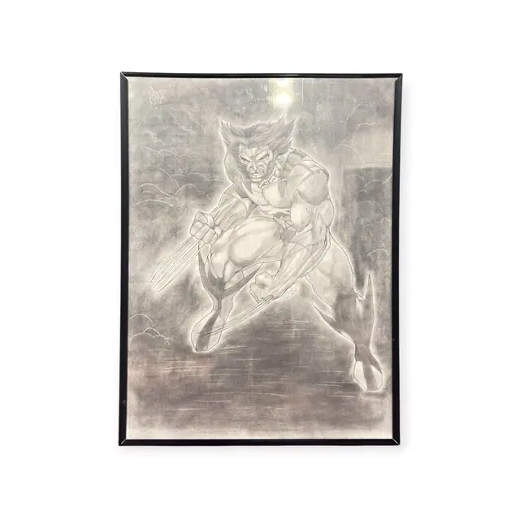
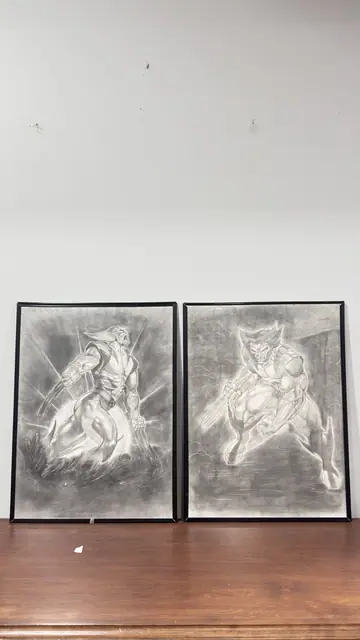
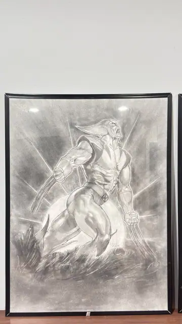
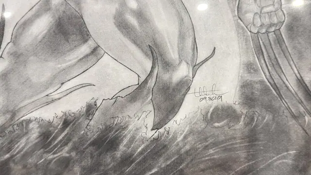
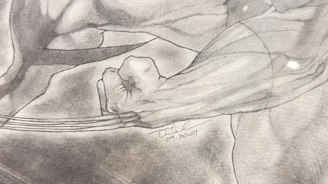

Paintings & Prints
Pair of Large Wolverine Charcoal Drawings, Signed, Framed, 2001
Unknown · dated 2001
Price Upon Request





About the Item
A matched pair of large, dramatically shaded charcoal and graphite drawings of a clawed comic-book hero, each caught mid-lunge with the body coiled and the muscles heavily modelled. Broad smudged tones sweep out behind the figure as motion and smoke, and the claws are drawn as long, hard-edged blades that cut across the sheet. The palette is entirely greyscale, from near-black rubbed passages to the untouched white of the paper, with the figure's mask and snarling face picked out by sharp highlights. Both sheets are dated in the lower right and framed identically. Medium: charcoal and graphite on paper. Signed lower right of each sheet, in pen. Inscribed on the reverse or mount: 09.30.01. Condition: Sheets appear clean with no tears; some charcoal has migrated onto the paper as light grey haze, which is normal for the medium. Strong ceiling-light reflections on the glass.
Details
- Creator:
- Unknown
- Creation Year:
- dated 2001
- Dimensions:
- Height: 24.25 in (61.59 cm)
Width: 18.25 in (46.36 cm)
outside of frame - Medium:
- charcoal and graphite on paper
- Period:
- 21St
- Condition:
- Offered in the condition shown in the photographs.
- Reference Number:
- VO-79
- Documentation:
- no certificate photographed
- Gallery Location:
- 09.30.01